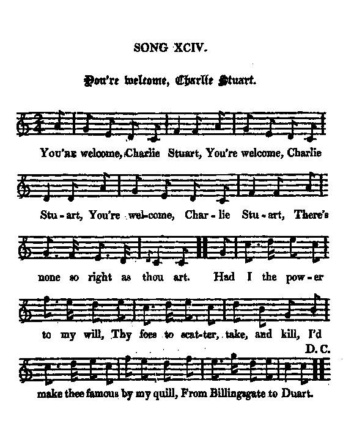
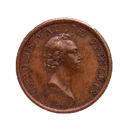

You're Welcome Charlie Stuart!
Bienvenue à Charles Stuart
A Synoptic Song on the 1745 Rising
Ambiguous French policy, Repression after Culloden, Flora McDonald, Union against Hanoverians
from J. Ritson's "Scotish Songs", vol. II, p.99 (class III, N°27), 1794, who took it from a collection of "Loyal Songs, &c.", 1750from "The True Loyalist", page 84, 1779
and from Hogg's "Jacobite Relics" 2nd Series N°94 page 183, 1821
Tune - Mélodie
"You're Welcome Charlie Stuart"
from Hogg's "Jacobite Relics" 2nd Series N°94, page 183, 1821
Sequenced by Christian Souchon

|
To the tune:
Scottish reel, first published in Gow's "Complete Repository" 1817 Then in "Stewart-Robertson's "Athole Collection", 1884. Also published in David Young's "Duke of Perth" MS (1734) as " The Confederacy ", and in Walsh's "Caledonian Country Dances" around 1736 with the same title. A similar song is entitled " Queensberry House". Robert Burns wrote a song to the air of "Ye're welcome Charlie Stewart" in the "Scots Musical Museum" (1796), and published it in Volume V under N° 471, page 485 Using the same tune and a similar text, he praised the merits of another Stewart, Willie Stewart, factor of the Closeburn estate whom he visited as an excise officer, "Your welcome Willie Stewart!" before turning his attention to Willie's daughter, Polly -or more formally, Mary-, and renaming the song "Lovely Polly Stewart" . The chorus and first verse run thus: "O lovely Polly Stewart, O charming Polly Stewart There's ne'er a flower that blooms in May That's half's fair as thou art!" "The flower it blaws, it fades, it fa's And art can ne'er renew it; But worth and truth Eternal youth Will gi'e to Polly Stewart." Source "The Fiddler's Companion" (cf. Link). |
 |
A propos de la mélodie:
Reel écossais, publié pour la première fois dans le "Répertoire Complet" de Gow, en 1817 Puis dans l'"Athole Collection" de Stewart-Robertson, en 1884. Egalement dans le mauscrit de David Young, dit "du Duc de Perth" (1734) sous le titre "la Conspiration", et dans les "Contredanses de Calédonie" de Walsh, vers 1736, avec le même titre. Une mélodie similaire porte le nom de "Queensberry House". Robert Burns écrivit une chanson sur cet air dans le "Musée Musical écossais" (1796), et le publia page 485 du volume V sous le numéro 471. En utilisant la même mélodie et des termes similaires, il vantait les mérites d'un autre Stewart, Willie Stewart, régisseur du domaine de Closeburn qu'il connaissait en tant qu'employé de l'accise, "Bienvenue, Willie Stewart!" , avant de s'intéresser à sa fille Mary, -Polly, pour les intimes- et de renommer la chanson, "Jolie Polly Stewart ". Le refrain et la première strophe s'énoncent ainsi: "O jolie Polly Stewart, Charmante Polly Stewart Aucune fleur au mois de mai A toi ne se compare!" "La fleur fleurit puis est flétrie, L'art ne la rappelle à la vie. Mais ta jeunesse N'aura de cesse, Honnête Polly Stewart." |